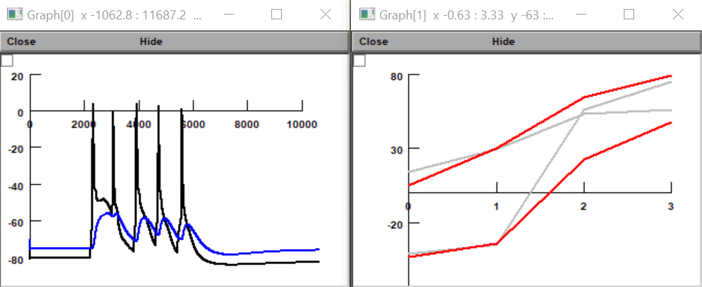
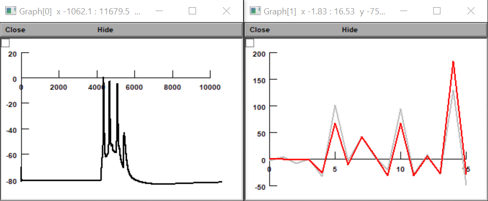
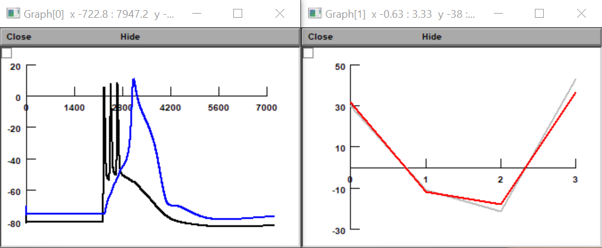
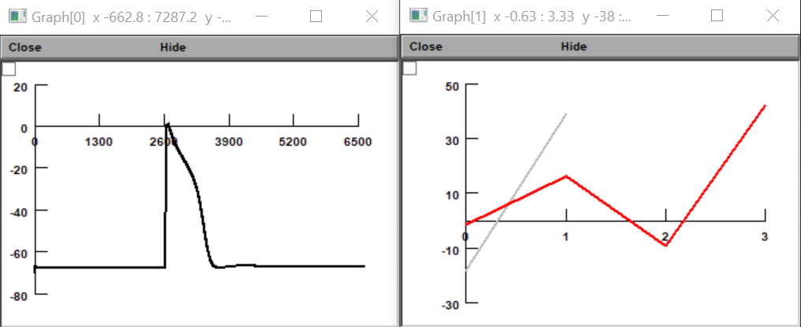
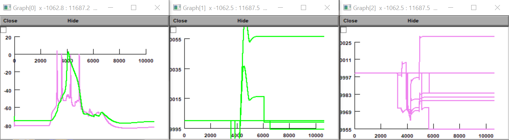
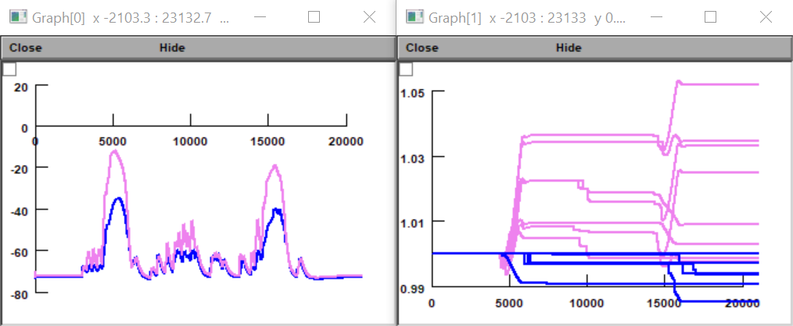

Demonstration of a synaptic plasticity rule with four pathways in a detailed L5b pyramidal cell model. From: "Unifying Long-Term Plasticity Rules for Excitatory Synapses by Modeling Dendrites of Cortical Pyramidal Neurons" (Ebner et al., 2019) https://doi.org/10.1016/j.celrep.2019.11.068 These files include the Hay et al. (2011) L5b pyramidal cell model (accession number 139653) for demonstration. ====================================================================================================== NEURON has to be installed to perform simulations. There are two ways to run the demo. (a) Auto-launch from ModelDB. A menu will appear from which simulations can be selected to recreate figures in the paper. Please note that, due to the fact that simulation scripts were originally intended to be run individually, NEURON should be closed and restarted after each run. Otherwise, errors may occur. (b) Download and extract the archive. Compile the .mod files in the "mod" folder (using mknrndll/ nrnivmodl) and copy the resulting "nrnmech.dll" file to the folder where the .hoc files are located. This allows for more flexibility, as scripts can be run individually and in parallel with modifications to their parameters (by editing the .hoc files). ====================================================================================================== This is how the figures should look like: Figure 2B --------- - example voltage trace at proximal (black) vs. distal (blue) location, 50 Hz condition - comparison of model (red) vs. experimental (gray) plasticity data at 10, 20, 40 and 50 Hz  Figure 3 -------- - example voltage trace (black), post-post-post-pre at 100 Hz - comparison of model (red) vs. experimental (gray) plasticity data  Figure 4B --------- - voltage at proximal (black) vs. distal (blue) location - comparison of model (red) vs. experimental (gray) plasticity data, proximal & distal (+10/-10 ms for each)  Figure 5B --------- - example voltage trace (black), distal segment of an apical tuft dendritic branch - comparison of model (red) vs. experimental (gray) plasticity data, oblique & tuft dendrites (proximal/distal segments each)  Figure 6B --------- - voltage at basal (violet) vs. apical (green) dendrites - single weights at apical (green) vs. basal (violet) dendrites (separate window panels)  Figure 7B --------- - voltage at location A (violet) vs location B (blue) - single weights at location A (violet) vs. location B (blue) 